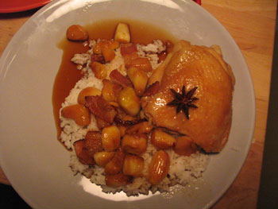

Chicken stew
Chicken stew
Tonight I made a pretty tolerable version of my favorite Mark Bittman recipe, an update of Chicken with 40 Cloves of Garlic that I call Autumn Chicken with Many Cloves of Garlic.

This is the fourth time I’ve made the dish. It was neither the best nor the worst version, although it would certainly have been the best were it not for the disgusting, fatty excuse for chicken thighs I bought at D’Agostino. I couldn’t face the crowd at Whole Foods, and I figured that even d’Ag could get chicken right. No such luck. Look at that porky thigh. Anyway, the sauce was as delectable as ever, and maybe I’ll try it once more with better meat. I feel like I need to get something perfect before I can put it to rest.
I served the dish with an excellent Alsatian Riesling by Pierre Sparr—one of the cheapest Alsatian Rieslings available. After doing so much research on this region in the past week, I wanted to try one of its famous wines. I’m generally afraid of Riesling because of its sweet reputation, but Alsace is supposed to have the driest version, and this was more than tolerable. Fun fact: did you know that Alsace is the only region in France to classify its wine by varietal, rather than by vintner?
Incidentally, is oil rancid when it smells bad? I started putting grapeseed oil in the pan last night and I noticed a strong odor. Naturally I wiped it out and replaced it with vegetable oil, but was that necessary? Mommy? Christine?
Comments
ditto on the riesling. but i have had alsace and was ok with it.
btw, five points was great! andy’s dad (and gf and friends) loved it. we had a good time, good food and good service. your blog is so useful!
dinner next wed?
I don’t use grapeseed oil because I don’t like the flavor at all. I know it’s supposed to be healthful but to me it’s repulsive. Ditto for canola oil.
Mommy
Add a comment